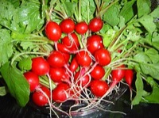

ラディッシュの生産量 都道府県ランキング
全19都道府県の順位と収穫量
ラディッシュの収穫量が全国で最も多いのは愛知県で、484 tです。全国（706 t）の69%を占めます。

| 順位 | 都道府県 | 収穫量 | 全国に占める割合 |
|---|---|---|---|
| 1位 | 愛知県 | 484 t | 69% |
| 2位 | 北海道 | 60 t | 8.5% |
| 3位 | 福岡県 | 44 t | 6.2% |
| 4位 | 群馬県 | 32 t | 4.5% |
| 5位 | 鹿児島県 | 25 t | 3.5% |
| 6位 | 静岡県 | 14 t | 2.0% |
| 7位 | 大阪府 | 10 t | 1.4% |
| 8位 | 神奈川県 | 9 t | 1.3% |
| 9位 | 兵庫県 | 7 t | 1.0% |
| 10位 | 千葉県 | 5 t | 0.7% |
| 11位 | 京都府 | 4 t | 0.6% |
| 12位 | 島根県 | 2 t | 0.3% |
| 13位 | 広島県 | 2 t | 0.3% |
| 14位 | 愛媛県 | 2 t | 0.3% |
| 15位 | 青森県 | 1 t | 0.1% |
| 16位 | 福島県 | 1 t | 0.1% |
| 17位 | 山梨県 | 1 t | 0.1% |
| 18位 | 岡山県 | 1 t | 0.1% |
| 19位 | 大分県 | 1 t | 0.1% |
ラディッシュの生産量の推移（令和2年産〜令和6年産）
全国の収穫量は、令和2年産の828 tから令和6年産の706 tへ、15%減りました。期間中、1位は一貫して愛知県です。
| 年 | 全国 | 1位 | 2位 | 3位 |
|---|---|---|---|---|
| 令和6年産 | 706 t | 愛知県484 t | 北海道60 t | 福岡県44 t |
| 令和4年産 | 745 t | 愛知県510 t | 福岡県54 t | 北海道53 t |
| 令和2年産 | 828 t | 愛知県510 t | 北海道90 t | 福岡県83 t |
この数字について
- 分類：アブラナ科
- 全国の収穫量：706 t
- この数字が表すもの：収穫量（収穫された重量）
- 調査：地域特産野菜生産状況調査 令和6年産
- 19県分を調査（調査していない県は順位に入りません）
ラディッシュの生産量について、よくある質問
- ラディッシュの生産量が日本一の都道府県はどこですか？
- 愛知県です。地域特産野菜生産状況調査（令和6年産）で484 tでした。
- ラディッシュの生産量ランキング2位・3位はどこですか？
- 2位は北海道（60 t）、3位は福岡県（44 t）です。
- ラディッシュの生産量ランキング4位・5位はどこですか？
- 4位は群馬県（32 t）、5位は鹿児島県（25 t）です。ラディッシュの全19県の順位は上の表のとおりです。
- ラディッシュの全国の生産量はどれくらいですか？
- 706 t（令和6年産）です。